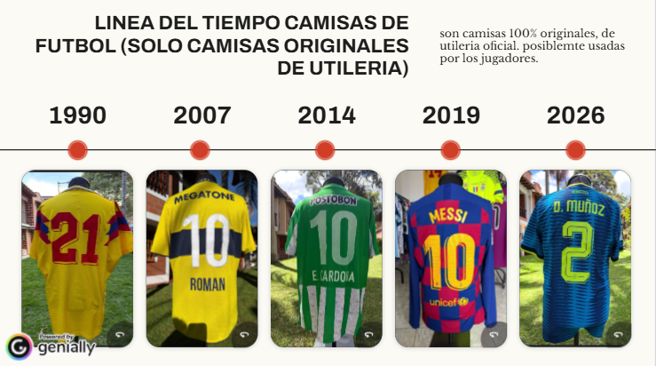

Reportaje sobre camisetas de fútbol en Medellín
La camiseta de fútbol: entre la historia, el negocio y la pasión de los hinchas
El mercado de camisetas de fútbol en Medellín reúne dos formas distintas de vivir una misma pasión. Mientras los coleccionistas buscan prendas originales que conservan la memoria de equipos, jugadores y momentos históricos, otros aficionados encuentran en las réplicas una alternativa más económica para vestir los colores de sus clubes. Detrás de cada camiseta hay una historia, pero también un negocio que crece alrededor de la nostalgia, la identidad futbolera y las diferencias de precio.
Por Felipe Durango Empezar a leer
Capítulo 1 de 7
Una pasión que comenzó con una camiseta
Para José Vásquez, una camiseta de fútbol no es solamente una prenda que se usa durante un partido. Puede ser un recuerdo, una pieza histórica, un objeto de intercambio e incluso una oportunidad de negocio. Desde Ciudad de Guatemala, José ha convertido esa pasión en Central America Shirts, una tienda especializada en camisetas originales que también funciona como punto de encuentro para coleccionistas y aficionados al fútbol.
Su relación con las camisetas comenzó mucho antes de convertirse en coleccionista. En 2011, cuando empezó a trabajar y tuvo la posibilidad de comprar su primera camiseta, descubrió una forma diferente de acercarse al fútbol. Era hincha del Milan y, aunque desde entonces comenzó a adquirir prendas relacionadas con este deporte, todavía no imaginaba que años después tendría cientos de camisetas en su colección y más de mil disponibles para la venta.
El verdadero cambio llegó en 2020. La pandemia modificó las rutinas de millones de personas y José encontró en las camisetas una manera de distraerse del estrés y de la incertidumbre que estaba viviendo. Lo que inicialmente comenzó como un hobby empezó a crecer rápidamente. Buscar camisetas, conocer su historia, identificar modelos y relacionarse con otros coleccionistas dejó de ser solamente una actividad para ocupar el tiempo libre.
Poco a poco, aquella afición comenzó a convertirse en un negocio.
José decidió crear Central America Shirts, un proyecto que nació alrededor de su pasión por las camisetas originales y que terminó adquiriendo una dimensión internacional. La tienda actualmente está conformada por dos socios: José y Gary, un coleccionista inglés y aficionado del Liverpool. Entre ambos han construido un catálogo que, según José, reúne entre 1.000 y 1.200 camisetas.
Pero no todas las prendas que pasan por sus manos terminan en la tienda. José mantiene una colección personal de aproximadamente 180 a 200 camisetas. Para decidir cuáles conserva existe una regla que refleja la seriedad con la que entiende el coleccionismo: si una camiseta no es de su talla, no se la queda. Aunque pueda tratarse de una pieza especial, prefiere mantener ese criterio para diferenciar su colección personal de la mercancía que comercializa.
camisetas en el catálogo de Central America Shirts, según José.
camisetas en su colección personal, aproximadamente.
La búsqueda de nuevas camisetas tampoco sigue un único camino. José y su socio utilizan diferentes formas para conseguir mercancía: realizan intercambios con otros coleccionistas, buscan piezas en distintos mercados y recurren a bodegas conocidas en Guatemala que reciben productos provenientes de Estados Unidos. Esta red de contactos resulta fundamental para encontrar camisetas que no siempre están disponibles fácilmente en Centroamérica.
En este mercado, sin embargo, conseguir una camiseta no es suficiente. También hay que saber reconocerla.
Capítulo 2 de 7
El valor de una camiseta está en su historia
Una de las habilidades que José ha desarrollado durante sus años como coleccionista es la identificación de camisetas falsas. Las etiquetas, los sellos, los acabados y diferentes elementos de fabricación pueden entregar pistas sobre la autenticidad de una prenda. Para alguien que trabaja exclusivamente con productos originales, conocer estas diferencias es fundamental, especialmente porque el crecimiento del mercado también ha aumentado la circulación de imitaciones.
La autenticidad es uno de los aspectos que más importancia tiene dentro del coleccionismo. Sin embargo, no es el único elemento que determina el valor de una camiseta. La antigüedad, la rareza, el estado de conservación, el jugador que la utilizó y el momento histórico que representa pueden convertir una prenda en una pieza especialmente buscada.
El mercado internacional ofrece algunos ejemplos de hasta dónde puede llegar ese valor. En mayo de 2022, la camiseta que Diego Armando Maradona utilizó durante el partido de cuartos de final del Mundial de México 1986 contra Inglaterra fue subastada por 7.142.500 libras esterlinas, cerca de 8,96 millones de dólares según el registro publicado por Guinness World Records. Se trata de la camiseta que quedó relacionada con los dos goles más recordados de aquel encuentro: el de la llamada Mano de Dios y el que posteriormente fue reconocido como el Gol del Siglo.
El valor de esta prenda no está relacionado únicamente con su diseño o con la marca que la fabricó. Su importancia está en haber sido utilizada por uno de los futbolistas más reconocidos de la historia durante un partido que quedó marcado en la memoria del fútbol mundial.
Otro caso reciente demuestra que el interés por estas piezas continúa. En julio de 2026, una camiseta utilizada por Pelé en la final del Mundial de Suecia 1958 fue vendida por 4,9 millones de dólares en una subasta de Sotheby's. La prenda, utilizada cuando Brasil consiguió su primer título mundial, se convirtió en la segunda camiseta de fútbol más valiosa vendida en una subasta, detrás de la de Maradona.
Camiseta de Maradona en los cuartos de final de México 1986 contra Inglaterra, subastada en mayo de 2022. Cerca de 8,96 millones de dólares.
Según el registro de Guinness World Records.
Camiseta de Pelé en la final del Mundial de Suecia 1958, vendida en julio de 2026 en una subasta de Sotheby's. Es la segunda más valiosa vendida en una subasta, detrás de la de Maradona.
Estos ejemplos permiten entender por qué algunas camisetas dejan de ser simples artículos deportivos y adquieren características de objetos históricos. No todas las prendas antiguas alcanzan valores extraordinarios, ni todas las camisetas de edición limitada se convierten en piezas costosas. Su precio depende de la historia que puedan demostrar, de su estado y del interés que despierten entre los compradores.
Para José, esa diferencia es fundamental. Una camiseta puede tener un diseño atractivo, pero su valor dentro del coleccionismo también depende de lo que representa y de la posibilidad de demostrar que es original.
Las colaboraciones entre clubes, artistas y marcas son otro ejemplo de esta transformación. En la entrevista, José explicó cómo este tipo de alianzas puede convertir una camiseta en una pieza más exclusiva y, por lo tanto, más atractiva para los coleccionistas. Un ejemplo cercano es la colaboración entre Blessd y Atlético Nacional, que mezcla la cultura urbana con la identidad futbolística del club. Este tipo de iniciativas demuestra que las camisetas han comenzado a ocupar un espacio que va más allá del fútbol: también hacen parte de la moda, la música y las expresiones culturales de sus aficionados.
El crecimiento de tendencias como el blokecore, que incorpora camisetas de fútbol a la vestimenta cotidiana, ha acercado estas prendas a personas que no necesariamente se consideran coleccionistas. Una camiseta puede comprarse para asistir al estadio, para completar una colección o simplemente porque su diseño encaja con una forma de vestir.
SiguienteUna afición que también construye comunidadCapítulo 3 de 7
Una afición que también construye comunidad
Para José, el negocio no termina cuando se vende una camiseta. Una parte importante de su proyecto está relacionada con la comunidad que ha construido alrededor de Central America Shirts.
En Guatemala ha participado en la organización de diferentes encuentros para coleccionistas y aficionados. En 2024, Central America Shirts organizó un Convivio Camisetero, pensado como un espacio para comprar, vender e intercambiar camisetas originales, pero también para reunir a personas interesadas en la cultura futbolera.
Al año siguiente, la comunidad continuó creciendo con el Sábado Camisetero, un evento que reunió nuevamente a coleccionistas y aficionados alrededor de camisetas originales, intercambios y conversaciones sobre fútbol.
Su recorrido también ha dejado de limitarse a Guatemala. José recuerda Bogotá como el primer evento internacional al que asistió. Después llegaron encuentros en Cali, Chile, Perú y Brasil. En 2025, Central America Shirts participó como expositor internacional en el encuentro Camisa na Rede, organizado por el Museu do Futebol de São Paulo, junto a coleccionistas de otros países.
Ese recorrido muestra cómo el coleccionismo ha comenzado a formar una red que conecta a personas de diferentes lugares. En Colombia, por ejemplo, la Convención Camisetera Mundial de Bogotá reunió en junio de 2026 a más de 40 expositores internacionales y más de 8.000 camisetas y objetos relacionados con la historia del fútbol. Medellín también ha sido escenario de estos encuentros. En mayo de 2026, El Colombiano publicó una crónica sobre una convención de coleccionistas realizada en la ciudad, en la que se encontraron camisetas originales, réplicas, prendas de utilería y piezas de distintas épocas.
Encuentros que menciona el reportaje
- 2024Convivio CamiseteroOrganizado por Central America Shirts en Guatemala para comprar, vender e intercambiar camisetas originales.
- 2025Sábado CamiseteroReunió de nuevo a coleccionistas y aficionados alrededor de camisetas originales, intercambios y conversaciones sobre fútbol.
- 2025Camisa na RedeEncuentro organizado por el Museu do Futebol de São Paulo. Central America Shirts participó como expositor internacional.
- Mayo 2026Convención de coleccionistas en MedellínEl Colombiano publicó una crónica con camisetas originales, réplicas, prendas de utilería y piezas de distintas épocas.
- Junio 2026Convención Camisetera Mundial de BogotáMás de 40 expositores internacionales y más de 8.000 camisetas y objetos relacionados con la historia del fútbol.
Estos espacios permiten reconocer que el coleccionismo no consiste solamente en acumular prendas. También implica conocer sus historias, identificar sus diferencias y compartir con personas que encuentran en ellas una forma de recordar el fútbol.
Lo que comenzó como una afición individual se está convirtiendo en una comunidad internacional.
SiguienteUn mercado que crece con la nostalgiaCapítulo 4 de 7
Un mercado que crece con la nostalgia
El momento actual favorece especialmente este tipo de coleccionismo. El fútbol está recuperando prendas de diferentes épocas y las camisetas retro se han convertido en uno de los principales atractivos del mercado. Durante el Mundial de 2026, comerciantes de Medellín reportaron incrementos importantes en las ventas de camisetas antiguas de la Selección Colombia.
Un informe publicado por El Colombiano el 23 de junio de 2026 señaló que, según un sondeo realizado entre comerciantes, las ventas de camisetas retro aumentaron entre un 50 % y un 300 % en algunos establecimientos. En ciertos puntos de venta, los comerciantes aseguraron que pasaron de vender alrededor de diez camisetas al día a comercializar hasta 500. Las referencias retro podían encontrarse entre los $85.000 y los $140.000, mientras que algunos modelos actuales se ofrecían entre los $50.000 y los $70.000.
Aumento de las ventas de camisetas retro en algunos establecimientos de Medellín.
Sondeo entre comerciantes, El Colombiano, 23 de junio de 2026.
Camisetas vendidas al día en ciertos puntos de venta, según los comerciantes.
La razón no parece estar únicamente en el Mundial. Muchas personas buscan camisetas que les permitan regresar a una época determinada: la Selección Colombia de los años noventa, el Brasil de Ronaldo, la Italia de los noventa o las grandes generaciones de clubes europeos. La camiseta funciona así como una especie de recuerdo que puede llevarse puesto.
Al mismo tiempo, las marcas han empezado a aprovechar esa nostalgia mediante reediciones de camisetas históricas. Esto ha generado una división dentro del mercado: mientras algunos aficionados pueden acceder a versiones nuevas de diseños clásicos, los coleccionistas más especializados siguen buscando las piezas originales, precisamente porque su disponibilidad es mucho menor.
Pero el crecimiento del mercado no se limita a las camisetas retro. Las ventas también responden a la actualidad de los equipos y a los jugadores que despiertan interés entre los aficionados. En septiembre de 2026, la llegada de James Rodríguez a Atlético Nacional impulsó la demanda de prendas relacionadas con el futbolista. Comerciantes del Centro de Medellín reportaron aumentos de hasta el 100 % en sus ventas, según información publicada por El Colombiano y retomada por La República.
Las cifras internacionales también muestran la dimensión comercial de este fenómeno. De acuerdo con datos de ventas de camisetas de clubes durante 2025 recopilados por Statista, el Real Madrid ocupó el primer lugar mundial con aproximadamente 3,13 millones de unidades vendidas, seguido por el Barcelona, con cerca de 2,94 millones. El París Saint-Germain apareció en el tercer puesto, con alrededor de 2,55 millones. Estos datos corresponden a ventas por clubes, no a una clasificación de camisetas individuales de jugadores.
Camisetas de clubes vendidas en 2025
Millones de unidades, aproximadas. Datos de Statista, por clubes y no por camisetas individuales de jugadores.
En Colombia, el precio de las prendas oficiales también influye en las decisiones de compra. Un informe de El Colombiano, publicado en febrero de 2026, registró camisetas de equipos del fútbol profesional colombiano con precios que iban aproximadamente desde los $150.000 hasta los $399.950, dependiendo del club y de la referencia. La diferencia entre estos valores y los de algunas alternativas del mercado informal ayuda a explicar por qué existen distintos públicos y canales de comercialización.
Precios mencionados en el reportaje
Los precios de camisetas retro y de modelos actuales vienen del sondeo de El Colombiano (23 de junio de 2026). Los de camisetas oficiales, de un informe del mismo diario de febrero de 2026.
Así, mientras una persona puede estar dispuesta a pagar una suma considerable por una camiseta original, histórica o de edición limitada, otra busca una prenda que le permita representar a su equipo sin asumir un gasto tan alto. En medio de esas decisiones se mueve un mercado que combina comercio formal, coleccionismo, reventa y circulación de imitaciones.
Para José, esa diferencia es fundamental. Su negocio se concentra en prendas originales y su conocimiento sobre autenticidad se convierte en parte esencial del valor que ofrece. Sin embargo, no todos los compradores se acercan a las camisetas con los mismos intereses ni con el mismo presupuesto.
Esa otra parte del mercado también se encuentra en Medellín, especialmente en los lugares donde el fútbol se vive de manera cotidiana.
SiguienteEn Medellín, la camiseta también se vende antes del partidoCapítulo 5 de 7
En Medellín, la camiseta también se vende antes del partido
En los alrededores del estadio Atanasio Girardot, la actividad comercial aumenta cuando se acerca un partido de Atlético Nacional o del Deportivo Independiente Medellín. Entre los vendedores de comida, las banderas y los puestos ambulantes, las camisetas forman parte de los productos que buscan los aficionados antes de ingresar al estadio.
En ese entorno se mueve un vendedor dedicado a comercializar camisetas falsificadas de los dos equipos de la ciudad. Su oferta se concentra en Nacional y Medellín, una decisión que responde al público que frecuenta el estadio y a la rivalidad futbolística que mantiene activa la demanda durante buena parte del calendario deportivo.
A diferencia de José Vásquez, que construyó su negocio alrededor de la búsqueda y comercialización de camisetas originales, este vendedor atiende a un consumidor que prioriza otros aspectos. Para muchos aficionados, la posibilidad de conseguir una camiseta a un precio considerablemente menor que el de una prenda oficial puede ser suficiente para decidir la compra.
La diferencia entre ambos mercados no está solamente en el precio. También cambia la relación que el comprador establece con la prenda. Para un coleccionista, una camiseta puede representar una temporada, un jugador, una final o un recuerdo que conserva durante años. Para alguien que compra una réplica antes de un partido, puede cumplir principalmente la función de vestir los colores del equipo y sentirse parte de la tribuna.
El negocio de las camisetas en los alrededores del Atanasio depende de una dinámica distinta a la de una tienda especializada. Los partidos concentran a los posibles compradores en un mismo lugar y durante un periodo determinado. La camiseta se convierte en un producto que se puede adquirir antes de entrar al estadio, junto con otros artículos relacionados con la experiencia futbolera.
Sin embargo, esta actividad también forma parte de un mercado que tiene diferencias importantes entre la venta informal, la comercialización de productos originales y la falsificación de marcas. No todas las camisetas que se venden fuera de los establecimientos oficiales son necesariamente falsas, así como tampoco toda mercancía que ingresa al país sin documentos aduaneros corresponde a una falsificación. Son situaciones distintas que pueden coincidir, pero que no deben confundirse.
La diferencia tiene importancia porque una camiseta puede ser original y, aun así, haber ingresado al país sin cumplir los requisitos aduaneros. Por otro lado, una falsificación reproduce elementos protegidos de una marca o de un club sin autorización, con la intención de comercializarla como una imitación del producto original.
Capítulo 6 de 7
El negocio informal y los controles en Medellín
El crecimiento de la demanda también ha llamado la atención de las autoridades. El 5 de mayo de 2026, la Policía Nacional informó sobre un operativo realizado en establecimientos comerciales del centro de Medellín, en coordinación con la Dirección de Impuestos y Aduanas Nacionales (DIAN). Durante los controles fueron aprehendidas 17.642 unidades de confecciones deportivas alusivas a la Selección Colombia, con un valor comercial estimado de $203.571.970.
Según el comunicado oficial, las prendas eran de procedencia extranjera y no contaban con documentos que acreditaran su ingreso legal al país. La institución presentó el resultado como parte de las acciones contra el contrabando en el Valle de Aburrá.
Unidades de confecciones deportivas alusivas a la Selección Colombia, aprehendidas el 5 de mayo de 2026 en el centro de Medellín.
Operativo de la Policía Nacional con la DIAN.
Valor comercial estimado de esas prendas.
Este caso permite dimensionar el movimiento comercial que existe alrededor de la indumentaria deportiva en Medellín. Sin embargo, es importante precisar que el operativo no demuestra que las 17.642 prendas fueran falsificadas. La información publicada por la Policía se refiere a mercancía que no contaba con los documentos necesarios para acreditar su ingreso legal al territorio colombiano. Esa diferencia es importante para comprender el problema sin confundir dos prácticas distintas.
La falsificación también tiene consecuencias económicas. En una entrevista publicada por LAUD, de la Universidad Distrital Francisco José de Caldas, el docente de Derecho Milton Perdomo explicó que la falsedad marcaria consiste en utilizar de manera fraudulenta elementos que identifican un producto, como sus logotipos, etiquetas o signos distintivos, para hacerlo pasar por auténtico.
El especialista también explicó que el contrabando se relaciona con el ingreso de mercancías al país sin cumplir los controles aduaneros correspondientes o mediante prácticas como la subfacturación. Aunque pueden presentarse al mismo tiempo, no significan lo mismo. La fabricación o comercialización de productos que utilizan marcas registradas sin autorización puede generar consecuencias legales, además de afectar a las empresas que producen y comercializan mercancía legítima.
En el caso de las camisetas de fútbol, el problema involucra a clubes, marcas deportivas, distribuidores y comerciantes. Las prendas falsificadas compiten con productos que tienen costos de fabricación, distribución, licencias y obligaciones comerciales. Por eso, la diferencia de precios no se explica únicamente por la calidad de la tela o los acabados, sino también por las condiciones en las que se produce y comercializa cada artículo.
Para el comprador, la decisión puede parecer sencilla: pagar más por una camiseta oficial o menos por una réplica. Pero detrás de esa elección existen diferencias relacionadas con la autenticidad, los derechos de las marcas, el comercio formal y las condiciones de producción.
SiguienteDos mercados, una misma pasiónCapítulo 7 de 7
Dos mercados, una misma pasión
Hoy, después de más de una década desde aquella primera camiseta que compró con el dinero de su trabajo y seis años desde que comenzó a coleccionar de manera seria, José Vásquez tiene dos mundos diferentes entre sus manos: una colección personal de cerca de 200 camisetas y una tienda que reúne hasta 1.200 piezas.
Pero quizá el crecimiento más importante no se pueda contar en camisetas. Está en los contactos que ha construido, los intercambios, los eventos, los viajes y las personas que ha conectado alrededor de una misma pasión. Desde Guatemala, José espera seguir llevando Central America Shirts a nuevos escenarios y tiene la mirada puesta en Europa, un territorio que considera fundamental para el futuro de su proyecto y para conocer de cerca los lugares donde esta cultura del coleccionismo tiene una larga tradición.
En Medellín, mientras tanto, las camisetas siguen encontrando compradores en los alrededores del Atanasio Girardot y en los comercios del centro. Allí, la decisión de compra puede estar marcada por el precio, el diseño, el equipo o el jugador que aparece estampado en la espalda. No todos buscan una pieza histórica ni todos están dispuestos a pagar el valor de una prenda original.
Las dos historias muestran que el mercado de camisetas de fútbol no responde a un único tipo de consumidor. Para unos, la autenticidad y la historia justifican la búsqueda de una pieza difícil de conseguir. Para otros, lo importante es tener una camiseta que represente al equipo y que se ajuste a su presupuesto.
Al final
Lo que comenzó para José con la compra de una primera camiseta terminó convirtiéndose en una empresa y en una comunidad internacional. En las calles de Medellín, esa misma pasión se transforma en una actividad comercial que crece al ritmo de los partidos, los jugadores y los torneos.
Al final, una camiseta puede ser muchas cosas: un recuerdo, una pieza de colección, un objeto de moda o un producto que se compra minutos antes de entrar al estadio. Su significado cambia dependiendo de quién la lleva, pero todas encuentran su origen en una misma relación con el fútbol: la necesidad de sentirse parte de una historia y de representar los colores de un equipo.
Por Felipe Durango
Pieza interactiva
Línea del tiempo de camisetas originales
Esta pieza hecha en Genially acompaña el reportaje sobre camisetas de fútbol. Reúne camisetas originales de utilería, de 1990 a 2026. Puedes explorarla sin salir de la página.
